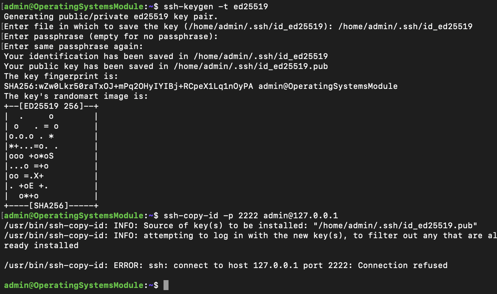
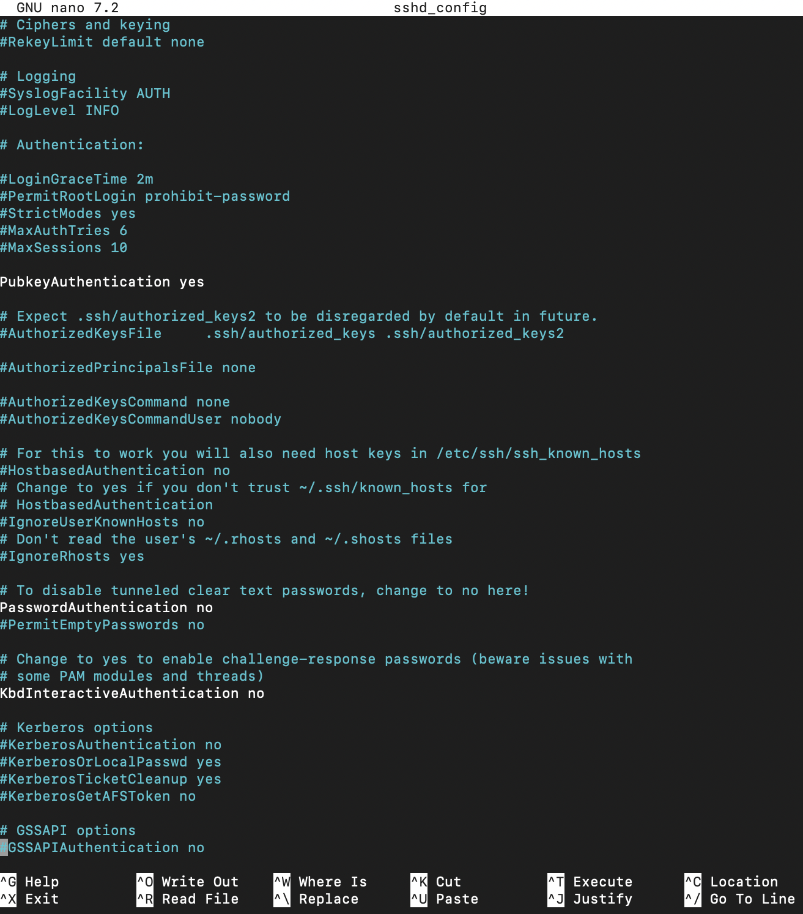
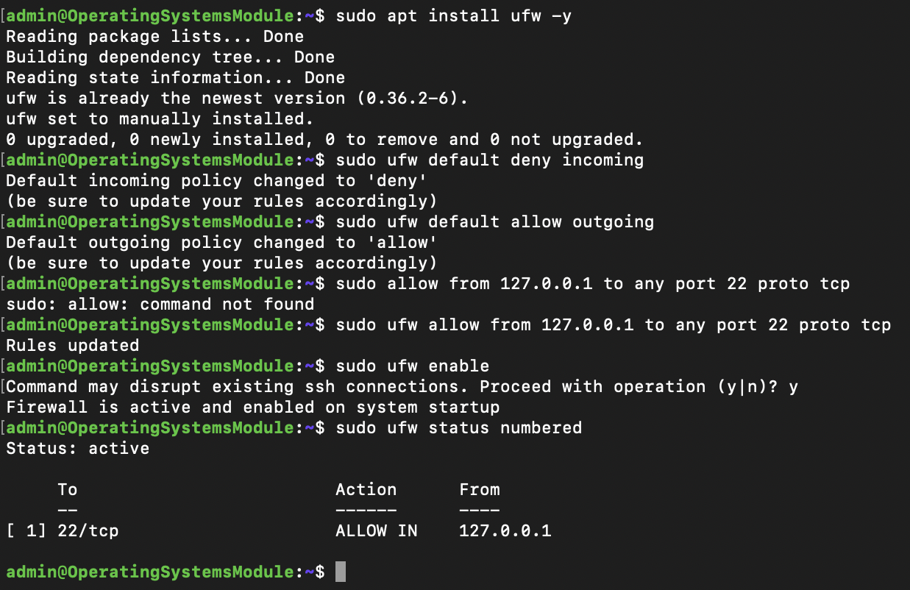
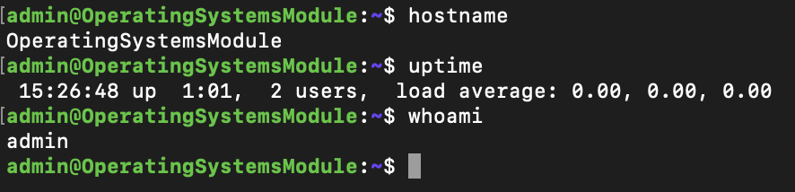
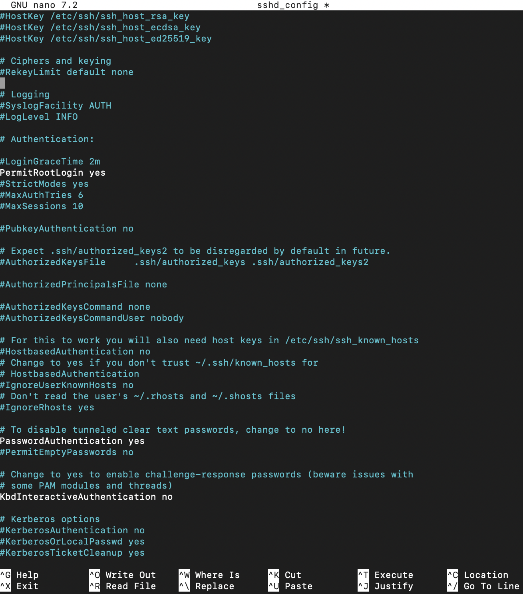
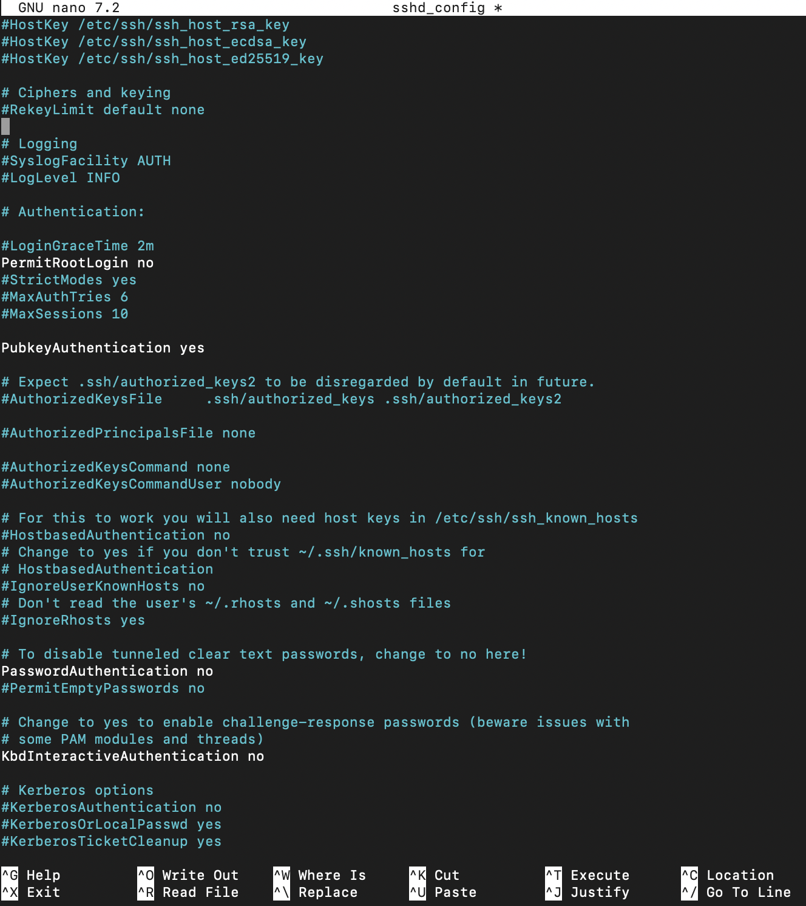
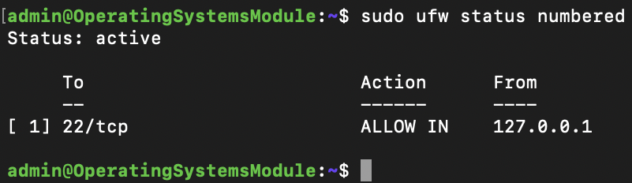

Week 1: System Planning and Distribution Selection
24/10/2025
System Architecture Diagram

Distribution Selection Justification
| Distribution | Pros | Cons |
|---|---|---|
| Ubuntu Server | Widely supported, stable LTS, large community, compatible with VirtualBox | Slightly heavier base install |
| Debian | Extremely stable, secure, minimal setup | Older packages, smaller repositories for new tools |
| CentOS | Enterprise-level stability, SELinux enabled by default | Steeper learning curve, enterprise-focused tools |
After comparing several Linux server distributions, I decided to use Ubuntu Server for my project. I chose Ubuntu because it is stable, easy to configure, and well-documented, which makes it suitable for developing my command-line and remote administration skills. Although Debian is extremely reliable and secure, its slower updates and smaller repositories make it less flexible for experimenting. On the other hand, CentOS is designed more for enterprise environments and has a steeper learning curve. Overall, Ubuntu provides the best balance between usability, support, and performance for a headless SSH-based setup.
Workstation Configuration Decision
The workstation used is my host operating system running on macOS. MacOS provides built in terminal SSH access to the server virtual machine; this method ensures that all administration is performed remotely, and aligning with professional practices. VirtualBox is used to host the server image and isolating it from the host environment.
Network Configuration Documentation
Due to university network restrictions preventing LAN connections over Wi-Fi, I configured my virtual machine
to use a NAT network in VirtualBox 7.2.4 instead of a host-only adapter.
To enable secure remote administration, I created a port forwarding rule that maps
SSH traffic from the host (MacBook) to the guest virtual machine. This forwards connections from
127.0.0.1:2222 on the host to port 22 on the virtual machine, allowing me to
connect locally using the command ssh -p 2222 admin@127.0.0.1. This approach avoids
university network restrictions while maintaining a realistic remote management workflow.
System Specifications
I used the uname, free, df -h, ip addr, lsb_release commands to provide the following specifications.
# uname -a
Linux
# free -h
total used free shared buff/cache available
Mem: 2001372 246300 1165364 1024 678632 1755072
Swap: 0 0 0
# df -h
Filesystem Size Used Avail Use% Mounted on
tmpfs 196M 1.2M 195M 1% /run
/dev/sda2 24G 2.7G 20G 12% /
tmpfs 981M 0 981M 0% /dev/shm
/dev/sda1 1.1G 6.4M 1.0G 1% /boot/efi
tmpfs 196M 4.0K 196M 1% /run/user/1000
# ip addr
1: lo: <LOOPBACK,UP,LOWER_UP> mtu 65536 qdisc noqueue state UNKNOWN group default qlen 1000
inet 127.0.0.1/8 scope host lo
2: enp0s8: <BROADCAST,MULTICAST,UP,LOWER_UP> mtu 1500 qdisc fq_codel state UP group default qlen 1000
inet 10.0.2.15/24 scope global dynamic enp0s8
# lsb_release -a
Distributor ID: Ubuntu
Description: Ubuntu 22.04 LTS
Week 2: Security Planning and Testing Methodology
31/10/2025
Performance Testing Plane
For this phase, I plan to design a performance testing and monitoring approach that ensures my Linux server
remains stable and secure during remote administration. I will monitor resource usage using command-line tools such as
top, free, and df -h to assess CPU load, memory utilisation, and disk activity.
Network responsiveness will be tested using ping and traceroute, while service reliability will
be checked through systemctl status ssh and log analysis with journalctl. These results will form
the foundation for comparing performance before and after security hardening, helping to identify any negative impact caused
by configuration changes. By maintaining a clear testing methodology and consistent monitoring approach, I aim to ensure
the system remains efficient, responsive, and secure throughout the deployment.
Security Configuration Checklist
| Area | Action | Purpose |
|---|---|---|
| SSH Hardening | Disabled root login, limited login attempts | Prevent brute-force and root access |
| Firewall Configuration | Installed & configured UFW | Restrict inbound traffic |
| Mandatory Access Control | Verified AppArmor/SELinux active | Enforce application-level security |
| Automatic Updates | Enabled unattended-upgrades | Maintain up-to-date security patches |
| User Priviledge Management | Created limited user, removed default admin | Principle of least privilege |
| Network Security | Checked open ports | Identify unnecessary exposed services |
Threat Model
The threat model outlines three seperate security concerns and suggests mitigation strategies for each of them.
- Brute-force SSH attacks: This occurs when an attacker repeatedly attempts to guess login credentials to gain remote access. To prevent this, I will disable root login, reduced the number of allowed authentication attempts, and configured the firewall to restrict repeated SSH connections, significantly lowering the chance of unauthorised access.
-
Privilege escalation: This threat involves a regular user gaining administrative access, often through misconfigured permissions
or exploitation of vulnerabilities. I will mitigate this by enforcing the principle of least privilege, creating dedicated non-root user accounts,
and carefully controlling
sudoaccess to minimise the risk of elevated privilege misuse. -
Unpatched software vulnerabilities: Outdated packages can be exploited by attackers to compromise system security.
To address this, I will enable automatic updates using
unattended-upgradesand scheduled periodic manual patch reviews to ensure that the system remains fully updated with the latest security fixes.
Week 3: Application Selection for Performance Testing
14/11/2025
Application Selection Matrix
For performance evaluation, I selected a variety of applications that each represent a different type of workload. These applications allow me to test CPU, memory, network load and disk I/O to understand how the system performs under different stress conditions.
| Application | Workload Type | Justification |
|---|---|---|
stress-ng --cpu 2 |
CPU-intensive | Generates sustained CPU load, good for analysing processor performance. |
stress-ng --vm 1 --vm-bytes 512M |
RAM-intensive | Allows controlled memory allocation to test RAM pressure and swapping. |
iperf3 |
Network-intensive | Measures network throughput and latency under controlled conditions. |
dd if=/dev/zero of=testfile bs=1M count=500 |
I/O-intensive | Creates a large file to simulate heavy disk write operations. |
Installation Documentation
All applications were installed remotely over SSH to maintain a headless, command-line focused administration environment. The following commands were executed after connecting to the server via:ssh -p 2222 admin@127.0.0.1.
Update any repositories sudo apt install
Install network testing tools sudo apt install -y iperf3
Intsall stress testing tools sudo apt install -y stress-ng
Install I/O performance analyser sudo apt intall -y fio
Resource Profiles and Usage
- CPU-intensive: The
stress-ng --cpu 2test is expected to cause near 100% CPU utilisation on the selected cores, with minimal RAM, disk, or network usage. - RAM-intensive: The
stress-ng --vm 1 --vm-bytes 512Mtest should significantly increase memory usage, potentially triggering swapping if RAM limits are reached, while CPU and disk activity remain moderate. - Network-intensive: Using
iperf3should produce high network throughput and increased socket activity, while CPU, RAM, and disk remain lightly used. - I/O-intensive: The
dd if=/dev/zero of=testfile bs=1M count=500file creation test is expected to generate high disk write throughput and moderate CPU usage, with minimal RAM and no network activity.
Monitoring Strategy
To measure system performance during each workload, I created a monitoring strategy using a range of
command-line tools that provide real-time system metrics. CPU and memory usage will be observed using
top and vmstat, which allow me to track load averages, process activity, and
overall memory utilisation. Disk performance will be monitored using iostat and df -h
to measure throughput and file system usage, while network-intensive workloads will be analysed using
ss -tuln and ping to monitor socket activity and latency. Logs will be collected using
journalctl to identify any unusual behaviour or performance issues. Each workload will be measured
before, during, and after execution to compare performance changes across different scenarios and identify
any potential bottlenecks.
Week 4: Initial System Configuration & Security Implementation
21/11/25
I focused on securing my Linux server while managing it entirely through SSH. I implemented key-based authentication, configured a restrictive firewall, created a non-root administrative user, and documented all changes. This phase strengthened the server’s security and ensured that all administration was performed remotely and securely.
Configure SSH
In this section, I configured the server to use key-based SSH authentication instead of passwords. I generated a secure key pair, added my public key to the server, and disabled password authentication in the SSH configuration. This significantly improved the security of remote access by preventing brute-force login attempts.
 Configure Firewall
Here, I implemented a strict firewall policy to ensure that SSH access is only permitted from my workstation. By allowing a single source IP, I reduced the server’s attack surface and ensured that no other device can attempt an SSH connection. This follows the principle of least privilege.
Manage Users
In this section, I created a dedicated non-root administrative user and granted them the necessary sudo privileges. This allowed me to disable direct root login while still being able to perform administrative tasks when required. This step improved accountability and aligned the system with Linux security best practices.

SSH Access Evidence
Here, I collected screenshots showing that I could successfully connect to the server via SSH after applying the security changes. These screenshots provide proof that key-based authentication works and that I can administer the system without relying on insecure methods.
Configuration Files
In this section, I documented the changes I made to important configuration files, such as sshd_config. I included “before and after” comparisons
to clearly show how I modified system settings and explain why each change was necessary for security.
Before:
After:
Firewall Documentation
For this part, I captured the full firewall ruleset using commands such as ufw status numbered. I explained what each rule does and how it contributes to securing the server. This documentation provides a clear overview of the system’s network-level protections.
Remote Administration Evidence demonstrating commands executed via SSH
In the final section, I demonstrated that all system changes were carried out remotely via SSH, in line with the module’s requirements. I gathered evidence of administrative commands being executed from my workstation to show that I managed the server headlessly without relying on the VirtualBox console.
I had to update both UFW and my SSH key configuration because the VM was blocking legitimate SSH traffic and rejecting my authentication. VirtualBox NAT forwards connections
from the host as coming from 10.0.2.2, not 127.0.0.1, so UFW was silently dropping the packets until I added a rule allowing SSH from the NAT gateway. At the same time,
password authentication had been disabled for security, but the VM did not yet contain the correct public key from my Mac. This caused SSH to reject every login attempt until
I added my key to authorized_keys and configured my Mac to use the correct private key.